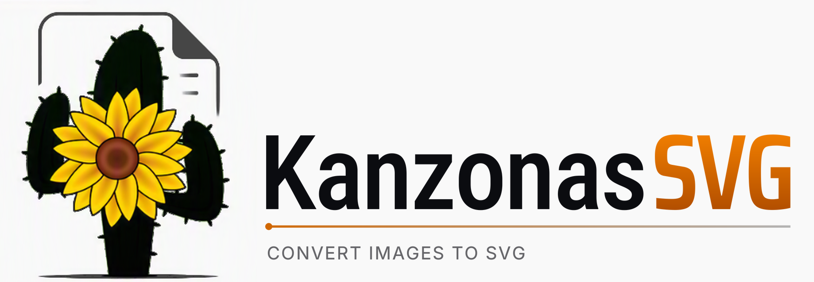

Turn pictures into SVG files
Logos, drawings and scans traced into clean SVGs you can edit in Inkscape, Illustrator or any vector editor. Open a picture and KanzonasSVG picks the settings that suit it. Open source, no account, nothing uploaded.
Newest version from GitHub releases
Linux (AppImage) · Windows without installing (zip) · All releases · Source code on GitHub
About the Windows warning. Windows warns about programs that aren't code-signed and that it hasn't seen much yet, and every new version counts as new. The code-signing certificate that stops this costs money this free project doesn't spend yet. The warning doesn't mean anything is wrong. If your browser asks, choose Keep; if Windows says "Windows protected your PC", click More info > Run anyway.
Why you can trust it: the source code is public on GitHub, and every download is built by GitHub's own servers straight from that code, only after its automated tests, a battery of tests that tries to break it, and a self-test of the finished program pass. Each release lists SHA-256 checksums so you can check your copy. No ads, no account, and your pictures stay on your computer.
Questions? Write to support@kanzonas.com.
Screenshots


Click a picture to see it full size, then use the arrows to go through them.
What it does
Picks the settings for you
Open a picture, drag it in or paste it, and Auto settings sets everything for it: a logo's or illustration's exact colors (up to 64), smoothing for photos and scans, the background, and thin lines for drawings and plans. The SVG appears beside the picture; change any setting and it updates.
Exact colors, sharp edges
Flat colors come out exactly as in the picture, with no rings of in-between shades around letters and shapes. Thin lines stay thin and keep their colors, and the holes in letters like O stay holes.
Only what you want
Crop to trace just part of a picture, such as the drawing in a screenshot without the toolbars. Make the background see-through, keeping its color inside shapes, or remove it everywhere.
Modes for every kind of picture
Colors (best for logos), grays, brightness steps, black and white for scans of line drawings, edges, and centerline tracing: lines along the middle of strokes.
Fast, even on big pictures
Uses all your computer's cores: a 12-megapixel photo is traced in about a second, with a quick preview first. The window never freezes.
Save, copy or batch
Save the SVG, or copy it and paste it straight into Inkscape. A command line converts one picture or a whole folder at once.
What's new
A free alternative to Inkscape's Trace Bitmap
KanzonasSVG's tracing is Inkscape's Trace Bitmap (Potrace and Autotrace) with fixes, in a program that does only this. If you trace pictures in Inkscape and fix the result by hand, try KanzonasSVG first.
| Feature | KanzonasSVG | Inkscape's Trace Bitmap |
|---|---|---|
| Picks the settings for each picture | Yes: colors, smoothing, background, line art | No |
| Colors | Exactly the picture's, for flat colors | Close to the picture's |
| Edges between colors | Sharp | In-between shades as extra outlines |
| Thin lines (plans, drawings, screenshots) | Kept, in their colors | Thickened and faded by smoothing |
| Trace part of a picture | Crop | No |
| Many files at once | Command line | No |
| Edit the SVG afterwards | No: open it in Inkscape or another editor | Yes: it's a vector editor |
| Pixel art (Depixelize), selecting the foreground (SIOX) | No | Yes |
| Systems | Windows, Linux | Windows, macOS, Linux |
How close the SVG comes to the picture
Pixels clearly the wrong color (off by more than 25% when the SVG is drawn and compared with the picture). Lower is better.
| Picture | Inkscape, 8 colors | KanzonasSVG, Auto settings |
|---|---|---|
| A two-color logo | 1.6% | 0.26% |
| The same logo as a JPEG | 1.5% | 0.34% |
| Sunflower and cactus | 6.5% | 2.5% |
| Smiley | 0.46% | 0.23% |
| A flat illustration, 15 colors | 1.7% | 0.29% |
| A floor plan (thin gray lines, blue labels) | 0.87% | 0.002% |
| The Starry Night | 3.7% | 2.9% |


Measured by KanzonasSVG's developers in November 2026 against Inkscape's own code (its development version of 10 November 2026, whose tracing is the same as Inkscape 1.4.4's), on the same pictures, with Inkscape's default settings; every SVG drawn by the same renderer. With Autotrace the gap is wider (the smiley: 65% in Inkscape, a black disc, against 0.60%). On a big painting KanzonasSVG is faster (The Starry Night: 0.24 s, Inkscape 1.1 s) and its file smaller; on line art, which it traces at four times the size, it's slower. Full results: KanzonasSVG's README. The same fixes were offered to Inkscape: inkscape!8302. Inkscape is a trademark of its owners.
Free, with no account, no watermark and no upload: unlike many online converters, your picture never leaves your computer. Missing something? Tell us.
Good to know
- Free and open source (GPL-2.0 or later)
- Windows, and Linux (64-bit PCs; Ubuntu 22.04, Debian 12, Fedora 36 or newer)
- Nothing is uploaded: it only goes online to check for a newer version (you can turn that off)
- Opens PNG, JPEG, BMP, GIF, WebP and TIFF pictures, or a picture you copied
- Installs without administrator rights, and adds itself to "Open with" for pictures
- Updates itself: Update now downloads the new version, checks it and installs it, settings kept